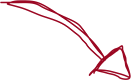
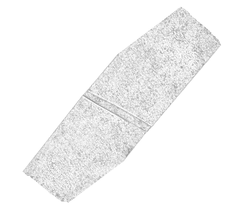
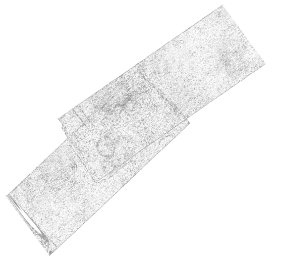
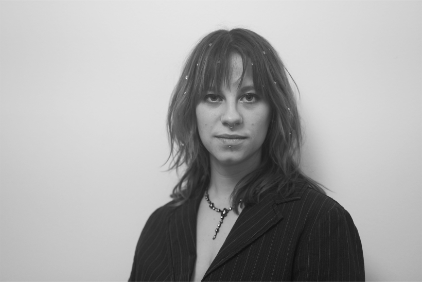

Om Mig




Jeg er Silje på 28år. Jeg har arbejdet og udforsket billeder som videograf på musikvideoer, egne projekter og haft enkelte professionelle job som både still fotograf og videograf.
Jeg synes altid det er spændende at arbejde indenfor forskellige stiltyper og elsker at mikse medier og lade dem arbejde sammen på nye måder.
Jeg elsker legende universer.
MINE FÆRIDGHEDER EFTER 1. SEMESTER